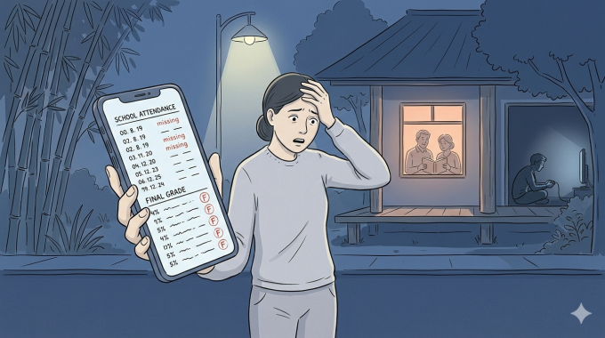

Mỹ – Iran đạt thỏa thuận về ngừng bắn, mở cửa eo biển Hormuz trong hai tuần
Mỹ và Iran đồng ý ngừng bắn trong hai tuần, Tehran sẽ cho phép tàu thuyền đi qua eo biển Hormuz trong thời gian này "với sự điều phối từ lực lượng vũ trăng".
Gia đình tôi có ba chị em, hai chị em tôi là con gái đầu, đã tự lập từ khi còn trẻ và luôn nỗ lực làm việc để nuôi sống bản thân, đồng thời hỗ trợ gia đình, đặc biệt là chăm sóc bố mẹ gần 80 tuổi. Vì bố mẹ đã già yếu, không muốn họ phải lo toan việc gì nên mọi chi tiêu trong gia đình, mỗi khi có phát sinh, hai chị em tôi lại cùng nhau chia sẻ và đóng góp. Chúng tôi cũng quyết định gánh vác việc nuôi ăn học cho em trai út, mong em có thể học hành tốt, có tương lai. Tuy nhiên, dù chúng tôi luôn yêu thương, quan tâm và hỗ trợ, em trai lại tỏ ra thiếu sự biết ơn. Việc học của em đã bị trì hoãn hai năm chỉ vì mê game online và không chú tâm vào việc học. Em luôn tìm cách lừa dối bố mẹ và chúng tôi.

Hôm nay, khi chúng tôi đến trường để gặp giáo viên, mới biết em đã không tham gia thi cử và học hành trong gần hai học kỳ. Nghe xong, chân tay tôi bủn rủn, nước mắt cứ chực trào. Chúng tôi không muốn bố mẹ già phải chịu thêm nỗi buồn và lo lắng vì em. Tôi thất vọng, mệt mỏi vì những lời hứa suông và sự lừa dối của em, dù đã rất nhiều lần chị em tôi động viên và giúp đỡ. Tôi có lúc muốn buông tay, rồi lại sợ bố mẹ sẽ suy nghĩ nhiều, ảnh hưởng đến sức khỏe.

Mỹ và Iran đồng ý ngừng bắn trong hai tuần, Tehran sẽ cho phép tàu thuyền đi qua eo biển Hormuz trong thời gian này "với sự điều phối từ lực lượng vũ trăng".

Người dân Iran tập trung trên đường phố Tehran, vậy có và hô khẩu hiệu sau khi lệnh ngừng bắn hai tuần với Mỹ được công bố.

Nằm ở bộ nam eo biển Hormuz, cách Iran gần 34 km, bán đảo Musandam của Oman đang chứng kiến những hệ lụy về kinh tế và đời sống khi xung đột bùng phát.